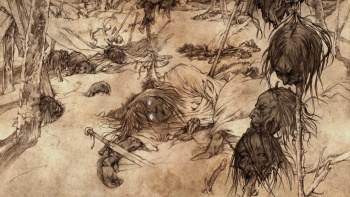
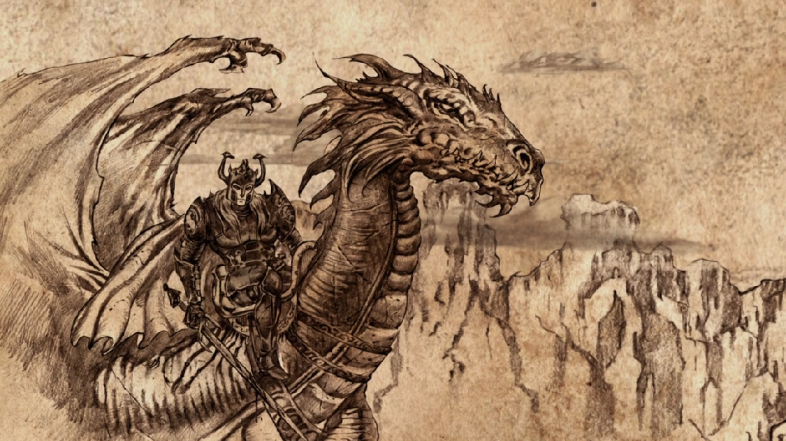

“Some old wounds never truly heal, and bleed again at the slightest word.” The overview of all events is shown in the timeline above. Not much is known about the early history of Westeros. The first race to occupy the majority of Westeros was the Children of the Forest. The Children of the Forest were, as one would expect, very small, though not necessarily young, people. They worshipped the Old Gods and spoke the old tongue, a language that men cannot understand. They also possesed magical powress that men could not, and could control animals and see into the future. Eventually, the first men arrived in Westeros. They had a long war with the Children of the Forest during which both races established themselves on the land and eventually both sides came to a peaceful coexistance. Not much is known about this time or the time after it, but then began the Age of Heros, a time during which many legends lived and nobody knows what's real and what isn't. There are stories of kinds who reigned for a thousand years and warriors of unimaginable power. In the middle of it all was an event of questionable reality known as the "Long Night", a winter that lasted many decades, possibly centuries. During this winter, a strange race known as the "others" attacked everyone and everything, bringing the dead back to life as zombie-like soldiers. How they were eventually defeated isn't known, but it is known that it was done through a cooperation between the Children of the Forest and men. After the others stopped and the Long Night ended, a gigantic wall seven houndred feet high was made to cut off the northern lands from the eternally cold lands farther north. The peace continues for many years after, until the Andals, another race of men from the east, invaded Westeros and war ensued. The Children of the Forest were presumed to be exterminated after this war, and a new religion was established, the Faith of the Seven. And the many kings of Westeros were united into just six kingdoms ruled by six Andal kings, save the Starks in the north, who are descended from the first men and still hold belief in the Old gods to this day. Meanwhile, in Essos, where little is known of the history very far back, the kingdom of Valyria is on the rise. The Valyrians made much use of magic and dragons and becamme an advanced civilization that took over much of Essos. The world persisted in such a state for many years, until Nymeria invaded the southern part of Westeros, forming Dorne, the seventh kingdom. Not long later, the Doom of Valyria happened, and Valyrian civilization was destroyed. The only remaining dragons were in the possession of the Targaryens, Valyrians living as lords in Westeros. A houndred years later, Aegon the Conqueror and his sisters rode the three remaining dragons to conquer westeros and form six of the seven kingdoms into one (the exception being Dorne, which was later united to the Targaryens through marriage).  This persisted for nearly three houndred years, until Aerys the mad king sat on the iron throne, the throne of Westeros, and his son, Rhaegar stole the woman who was to marry the lord of one of the most populous of the seven kingdoms, and that lord started a rebellion. His name was Robert Baratheon, the lord of Storm's End. Three other great lords joined Robert's cause, being Lord Eddard Stark of the North, whose father and brother were killed by the mad king, Lord Hoster Tully of the Riverlands, and Lord Jon Arryn of the Vale. The Rebels succeeded, and Robert Baratheon took the Iron Throne after the death of the mad king and Rhaegar, although two more of the mad king's children escaped.